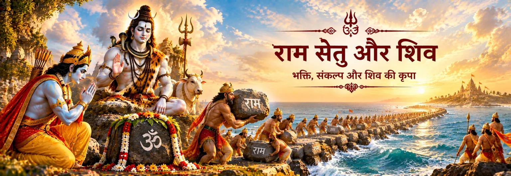

समुद्र का प्रकट होना
समुद्र राम के सामने प्रकट होकर आगे का मार्ग बताता है।

पवित्र यात्रा
राम सेतु उस महान समुद्री पारगमन की स्मृति है जिसे लंका की ओर जाते समय राम की सेना ने बनाया। वाल्मीकि रामायण में राम की सेना समुद्र तट पर पहुँचती है, समुद्र से संवाद होता है और विश्वकर्मा के पुत्र नल वानरों के साथ सेतु-निर्माण का कार्य संभालते हैं। इसके बाद सेना उसी सेतु से लंका की ओर जाती है।
शिव से इसका संबंध सेतुबन्ध और रामेश्वरम के पवित्र भूगोल में विशेष रूप से दिखाई देता है। वाल्मीकि की बाद की कथा में उस द्वीप पर महादेव की राम पर कृपा का स्मरण मिलता है और सेतुबन्ध को पवित्र तीर्थ कहा गया है। बाद की पौराणिक और मंदिर-परंपराएँ इसी भू-दृश्य को राम की शिव-उपासना और रामनाथ तीर्थ से जोड़ती हैं।
सेतु-निर्माण
वाल्मीकि की कथा सेतु-निर्माण का स्पष्ट क्रम देती है: समुद्र मार्ग देता है, नल अपनी निर्माण-क्षमता बताते हैं और वानर सामग्री जुटाकर उसे स्थापित करते हैं।
समुद्र राम के सामने प्रकट होकर आगे का मार्ग बताता है।
नल स्वयं को विश्वकर्मा का पुत्र बताते हैं और सेतु बनाने की क्षमता प्रकट करते हैं।
वानर वृक्ष, लकड़ी, घास और पत्थर जुटाकर राम की आज्ञा के अनुसार कार्य करते हैं।
राम और वानर सेना बने हुए सेतु से समुद्र पार करके लंका की ओर आगे बढ़ते हैं।
ग्रंथीय दृष्टि
वाल्मीकि रामायण के युद्धकाण्ड में स्वयं सेतु का सबसे स्पष्ट महाकाव्यात्मक वर्णन मिलता है। सर्ग २२ में समुद्र मार्ग देता है, नल सेतु बनाने की अपनी क्षमता बताते हैं और वानर कठिन निर्माण-कार्य करते हैं। आगे महाकाव्य राम की सेना के उसी सेतु से पार जाने का वर्णन करता है।
एक दूसरी परत वापसी की यात्रा में दिखाई देती है। राम उस द्वीप की ओर संकेत करते हैं जहाँ सेना ठहरी थी और वहाँ महादेव की कृपा का स्मरण करते हैं; सेतुबन्ध को पवित्र तीर्थ कहा जाता है। यही राम–शिव संबंध के पवित्र भू-दृश्य का एक महत्वपूर्ण आधार है, जबकि लिंग-स्थापना और मंदिर-पूजा की विस्तृत कथाएँ बाद की परंपराओं में विकसित होती हैं।
राम–शिव प्रतीक
समुद्र-पार का प्रसंग सेतु को एक स्वाभाविक भक्तिपूर्ण प्रतीक देता है—अनुशासन, साहस और कृपा से कठिन मार्ग पार करना।
सेतुबन्ध और रामेश्वरम का पवित्र भूगोल राम की यात्रा और शिव-उपासना को एक ही भक्तिपूर्ण भू-दृश्य में साथ रखता है।
नल का नेतृत्व और वानरों का सामूहिक श्रम सेतु को संगठित सेवा का शक्तिशाली प्रतीक बनाता है।
सेतुबन्ध केवल एक प्रसंग नहीं रहता; उसकी स्मृति पवित्र भूगोल, पूजा और तीर्थ-यात्रा में जीवित रहती है।
एक शांत चिंतन
महाकाव्य का सेतु अनेक हाथों से बनता है, लेकिन उसका भक्तिपूर्ण अर्थ भीतर तक पहुँचता है। साधक के सामने भी अनिश्चितता, दूरी और भय के समुद्र आते हैं। कथा एक सरल स्मरण देती है—जब उद्देश्य स्थिर होता है और उपलब्ध शक्ति यात्रा को समर्पित कर दी जाती है, तभी पारगमन आरम्भ होता है।
सेतु को सेवा के पवित्र प्रतीक के रूप में स्मरण किया जा सकता है—हर छोटा कार्य उस सेतु का हिस्सा बन सकता है जो व्यक्ति से कहीं बड़ा है।
भक्तों के प्रश्न
वाल्मीकि के युद्धकाण्ड में नल को सेतु-निर्माता बताया गया है और वानरों को राम की आज्ञा के अनुसार उसके निर्माण में कार्य करते हुए वर्णित किया गया है।
हाँ। बाद के पवित्र-स्थान प्रसंग में राम उस द्वीप पर महादेव की कृपा का स्मरण करते हैं और सेतुबन्ध को पवित्र तीर्थ कहा गया है। लिंग-स्थापना की विस्तृत कथाएँ बाद की परंपराओं में मिलती हैं।
वाल्मीकि का वर्णन वृक्ष, लकड़ी, घास और पत्थरों से सेतु बनाने की बात करता है, लेकिन राम-नाम अंकित पत्थरों के तैरने की लोकप्रिय भक्तिपरक कथा बाद की लोक और devotional परंपराओं से जुड़ी है, उद्धृत निर्माण-प्रसंग से नहीं।
क्योंकि सेतुबन्ध उस पवित्र भू-दृश्य का हिस्सा है जो राम की लंका-यात्रा को बाद की रामेश्वरम शिव-उपासना की परंपराओं से जोड़ता है। इस प्रकार यह महाकाव्यात्मक यात्रा, पवित्र भूगोल और भक्तिपूर्ण स्मृति को एक साथ रखता है।
पवित्र यात्रा आगे बढ़ती है
राम सेतु वह स्थान है जहाँ महाकाव्य की यात्रा पवित्र भूगोल में बदलती है। वाल्मीकि हमें सेतु, नल और पारगमन का वर्णन देते हैं; बाद की परंपराएँ उसी स्मृति के चारों ओर शिव-उपासना, तीर्थ और तीर्थ-यात्रा को विकसित करती हैं। इन परतों को साथ पढ़ने पर सेतुबन्ध एक महाकाव्यात्मक घटना भी रहता है और जीवित भक्तिपूर्ण भू-दृश्य भी।